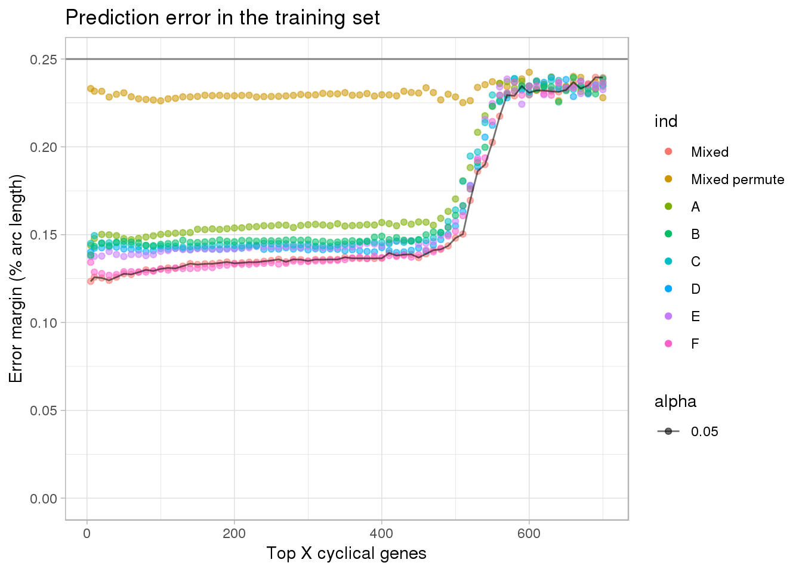
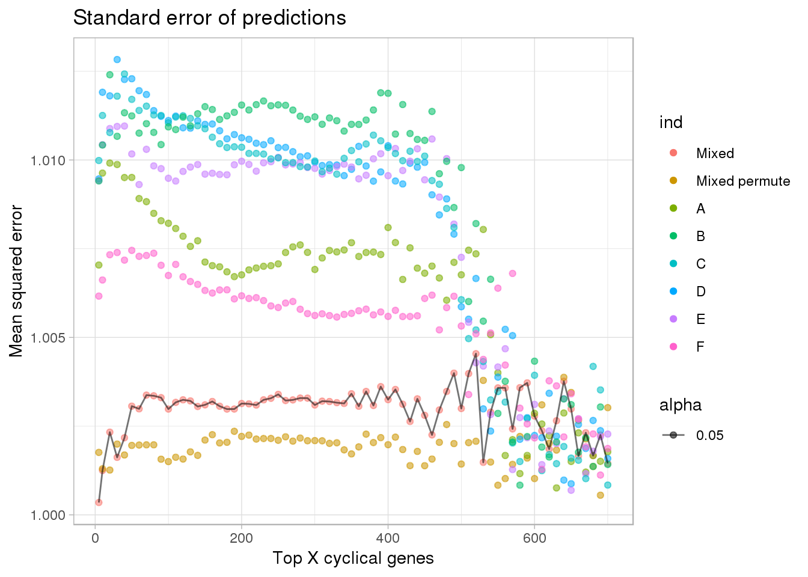
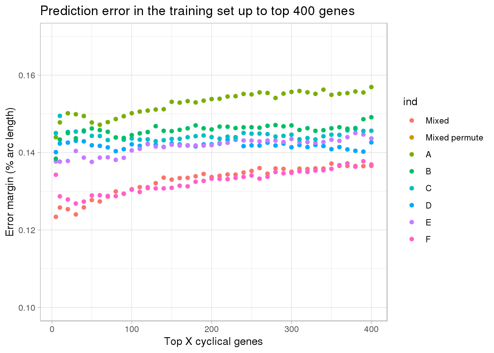
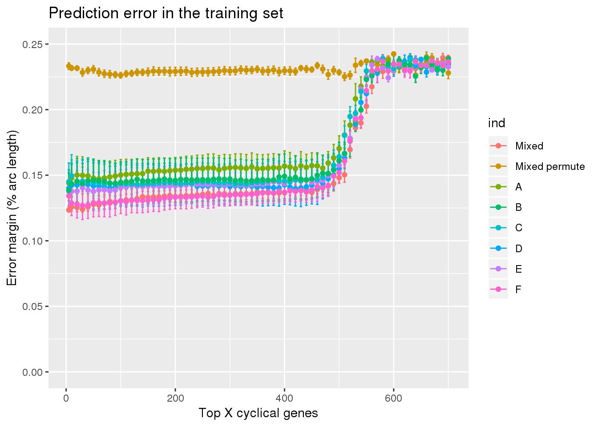
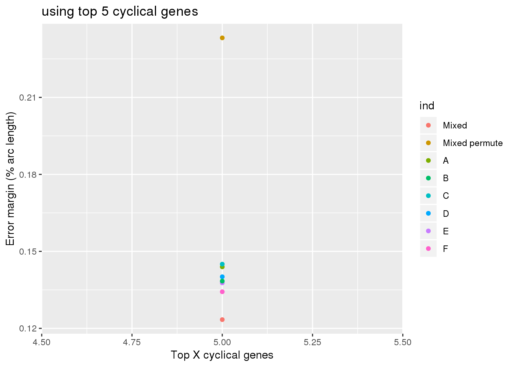

Last updated: 2018-09-20
Code version: 1bcf5d5
Cell times derived from fucci: mixed individua predict mixed individual, mixed individual predict one individual
Cell times derived from fucci + dapi: mixed individua predict mixed individual, mixed individual predict one individual
double_diff_time_ind <- readRDS("../output/method-train-summary-output.Rmd/double_diff_time_ind.rds")
double_diff_time_mixed <- readRDS("../output/method-train-summary-output.Rmd/double_diff_time_mixed.rds")
double_diff_time_mixed_permute <- readRDS("../output/method-train-summary-output.Rmd/double_diff_time_mixed_permute.rds")plots
library(ggplot2)
double_diff_time_ind <- do.call(rbind, double_diff_time_ind)
double_diff_time_ind <- subset(double_diff_time_ind, methods=="supervised")
df <- rbind(data.frame(subset(double_diff_time_mixed, methods == "supervised"),
ind="mixed"),
data.frame(subset(double_diff_time_mixed_permute, methods == "supervised"),
ind="mixed_permute"),
double_diff_time_ind)
df$ind <- as.character(df$ind)
df$ind <- factor(df$ind, levels=c("mixed", "mixed_permute",
"NA19098", "NA18855",
"NA19101", "NA18511", "NA18870", "NA19160"),
labels=c("Mixed", "Mixed permute", LETTERS[1:6]))
# df$type <- df$ind
# df$type[df$ind=="Mixed"]
ggplot(subset(df, ngenes <= 700),
aes(x=ngenes, y=diff_mean, group=ind, alpha=.05)) +
# geom_errorbar(subset(df, ngenes <= 700),
# mapping=aes(ymin=diff_mean-diff_se, ymax=diff_mean+diff_se, col=ind)) +
geom_point(aes(color=ind)) + #geom_line(lty=3) +
ylab("Error margin (% arc length)") + xlab("Top X cyclical genes") +
ggtitle("Prediction error in the training set") +
ylim(0,.25) +
geom_line(data=subset(df, ngenes <= 700 & ind=="Mixed"),
aes(x=ngenes, y=diff_mean)) +
geom_hline(yintercept=.25, col="gray50") +
theme_light()
ggplot(subset(df, ngenes <= 700),
aes(x=ngenes, y=(2^diff_se), group=ind, alpha=.05)) +
# geom_errorbar(subset(df, ngenes <= 700),
# mapping=aes(ymin=diff_mean-diff_se, ymax=diff_mean+diff_se, col=ind)) +
geom_point(aes(color=ind)) + #geom_line(lty=3) +
ylab("Mean squared error") + xlab("Top X cyclical genes") +
ggtitle("Standard error of predictions") +
# ylim(0,.25) +
geom_line(data=subset(df, ngenes <= 700 & ind=="Mixed"),
aes(x=ngenes, y=(2^diff_se))) +
# geom_hline(yintercept=.25, col="gray50") +
theme_light()
ggplot(subset(df, ngenes <= 400),
aes(x=ngenes, y=diff_mean, group=ind)) +
# geom_errorbar(subset(df, ngenes <= 700),
# mapping=aes(ymin=diff_mean-diff_se, ymax=diff_mean+diff_se, col=ind)) +
geom_point(aes(color=ind)) + #geom_line(lty=3) +
ylab("Error margin (% arc length)") + xlab("Top X cyclical genes") +
ggtitle("Prediction error in the training set up to top 400 genes") +
ylim(.10,.17) +
theme_light()
ggplot(subset(df, ngenes <= 700),
aes(x=ngenes, y=diff_mean, group=ind)) +
geom_errorbar(subset(df, ngenes <= 700),
mapping=aes(ymin=diff_mean-diff_se, ymax=diff_mean+diff_se, col=ind)) +
geom_point(aes(color=ind)) + #geom_line(lty=3) +
ylab("Error margin (% arc length)") + xlab("Top X cyclical genes") +
ggtitle("Prediction error in the training set") +
ylim(0,.25) 
ggplot(subset(df, ngenes == 5),
aes(x=ngenes, y=diff_mean, group=ind)) +
geom_point(aes(color=ind)) + #geom_line(lty=3) +
ylab("Error margin (% arc length)") + xlab("Top X cyclical genes") +
ggtitle("using top 5 cyclical genes") 
#+
# ylim(0,.25) Prediction error margin is minimized at 5 genes for both scenarios.
diff_mean_min <- sapply(1:length(unique(double_diff_time_ind$ind)), function(i) {
ind_lab <- unique(double_diff_time_ind$ind)[i]
tmp <- subset(double_diff_time_ind, ind==ind_lab)
tmp$ngenes[which.min(tmp$diff_mean)]
#a$ngenes[which.min(a$diff_mean)]
})
cbind(unique(double_diff_time_ind$ind), diff_mean_min) diff_mean_min
[1,] "NA19098" "5"
[2,] "NA18511" "420"
[3,] "NA18870" "50"
[4,] "NA19101" "130"
[5,] "NA18855" "5"
[6,] "NA19160" "30" double_diff_time_mixed$ngenes[which.min(double_diff_time_mixed$diff_mean)][1] 5range(df[df$ind =="Mixed" & df$ngenes <= 500,]$diff_mean)[1] 0.1233992 0.1480880range(df[df$ind =="A" & df$ngenes <= 500,]$diff_mean)[1] 0.1439658 0.1703153range(df[df$ind =="B" & df$ngenes <= 500,]$diff_mean)[1] 0.1384198 0.1609955range(df[df$ind =="C" & df$ngenes <= 500,]$diff_mean)[1] 0.1429252 0.1640695range(df[df$ind =="D" & df$ngenes <= 500,]$diff_mean)[1] 0.1398339 0.1549927range(df[df$ind =="E" & df$ngenes <= 500,]$diff_mean)[1] 0.1375898 0.1576234range(df[df$ind =="F" & df$ngenes <= 500,]$diff_mean)[1] 0.1268329 0.1520259range(df[(df$ind =="A" | df$ind =="B" | df$ind =="C" | df$ind =="D" | df$ind =="E" | df$ind =="F") & df$ngenes <= 100,]$diff_mean)[1] 0.1268329 0.1501624All top 5 in the mixed individual set are also the top 5 in the individual held-out datasets, which is not surprising, as the individual held-out samples are subsets of the mixed-indvidual samples.
double_topgenes_mixed <- readRDS("../output/method-train-summary-output.Rmd/double_topgenes_mixed.rds")
double_topgenes_NA18511 <- readRDS("../output/method-train-summary-output.Rmd/double_topgenes_NA18511.rds")
double_topgenes_NA18855 <- readRDS("../output/method-train-summary-output.Rmd/double_topgenes_NA18855.rds")
double_topgenes_NA18870 <- readRDS("../output/method-train-summary-output.Rmd/double_topgenes_NA18870.rds")
double_topgenes_NA19098 <- readRDS("../output/method-train-summary-output.Rmd/double_topgenes_NA19098.rds")
double_topgenes_NA19101 <- readRDS("../output/method-train-summary-output.Rmd/double_topgenes_NA19101.rds")
double_topgenes_NA19160 <- readRDS("../output/method-train-summary-output.Rmd/double_topgenes_NA19160.rds")
double_topgenes_NA18511[[1]] %in% double_topgenes_mixed[[1]] [1] TRUE TRUE TRUE TRUE TRUEdouble_topgenes_NA18855[[1]] %in% double_topgenes_mixed[[1]] [1] TRUE TRUE TRUE TRUE TRUEdouble_topgenes_NA18870[[1]] %in% double_topgenes_mixed[[1]] [1] TRUE TRUE TRUE TRUE TRUEdouble_topgenes_NA19098[[1]] %in% double_topgenes_mixed[[1]] [1] TRUE TRUE TRUE TRUE TRUEdouble_topgenes_NA19160[[1]] %in% double_topgenes_mixed[[1]] [1] TRUE TRUE TRUE TRUE TRUEdouble_topgenes_NA19101[[1]] %in% double_topgenes_mixed[[1]][1] TRUE TRUE TRUE TRUEPrint gene info. CDK1, TOP2A, and UBE2C are in the list of cell cycle genes used in previous single-cell RNA-seq studies (not discovered). HIST1H4C is listed as related to cell cycle in the Macosco list of genes, and the other one HIST1H4E in our list is
eset <- readRDS("../data/eset-final.rds")
library(Biobase)
fdata <- fData(eset)
genes_selected <- fdata[rownames(fdata) %in% double_topgenes_mixed[[1]],]
genes_selected chr start end name strand source
ENSG00000131747 hs17 38544768 38574202 TOP2A - H. sapiens
ENSG00000170312 hs10 62538089 62554610 CDK1 + H. sapiens
ENSG00000175063 hs20 44441215 44445596 UBE2C + H. sapiens
ENSG00000197061 hs6 26104104 26104518 HIST1H4C + H. sapiens
ENSG00000198518 hs6 26204858 26206266 HIST1H4E + H. sapiensseurat.genes <- readLines(
con = "../data/cellcycle-genes-previous-studies/seurat_cellcycle/regev_lab_cell_cycle_genes.txt")
seurat.genes <- list(s.genes=seurat.genes[1:43],
g2m.genes=seurat.genes[44:97])
which(genes_selected$name %in% unlist(seurat.genes))[1] 1 2 3oscope <- readRDS("../data/cellcycle-genes-previous-studies/rds/macosko-2015.rds")
oscope[oscope$ensembl %in% rownames(genes_selected),] hgnc phase ensembl
113 CDK1 G2 ENSG00000170312
273 HIST1H4C S ENSG00000197061
603 TOP2A G2 ENSG00000131747
605 TOP2A S ENSG00000131747
641 UBE2C G2 ENSG00000175063#aa <- fdata$name[match(double_topgenes_mixed[[2]],rownames(fdata))]
#oscope[oscope$ensembl %in% double_topgenes_mixed[[2]],]Get gene information
library(mygene)
gene_info <- getGenes(c("ENSG00000131747","ENSG00000170312","ENSG00000175063",
"ENSG00000197061","ENSG00000198518"),
fields=c("symbol","summary"), return.as = "DataFrame")
library(knitr)
kable(cbind(gene_info$symbol, gene_info$summary))| TOP2A | This gene encodes a DNA topoisomerase, an enzyme that controls and alters the topologic states of DNA during transcription. This nuclear enzyme is involved in processes such as chromosome condensation, chromatid separation, and the relief of torsional stress that occurs during DNA transcription and replication. It catalyzes the transient breaking and rejoining of two strands of duplex DNA which allows the strands to pass through one another, thus altering the topology of DNA. Two forms of this enzyme exist as likely products of a gene duplication event. The gene encoding this form, alpha, is localized to chromosome 17 and the beta gene is localized to chromosome 3. The gene encoding this enzyme functions as the target for several anticancer agents and a variety of mutations in this gene have been associated with the development of drug resistance. Reduced activity of this enzyme may also play a role in ataxia-telangiectasia. [provided by RefSeq, Jul 2010]. |
| CDK1 | The protein encoded by this gene is a member of the Ser/Thr protein kinase family. This protein is a catalytic subunit of the highly conserved protein kinase complex known as M-phase promoting factor (MPF), which is essential for G1/S and G2/M phase transitions of eukaryotic cell cycle. Mitotic cyclins stably associate with this protein and function as regulatory subunits. The kinase activity of this protein is controlled by cyclin accumulation and destruction through the cell cycle. The phosphorylation and dephosphorylation of this protein also play important regulatory roles in cell cycle control. Alternatively spliced transcript variants encoding different isoforms have been found for this gene. [provided by RefSeq, Mar 2009]. |
| UBE2C | The modification of proteins with ubiquitin is an important cellular mechanism for targeting abnormal or short-lived proteins for degradation. Ubiquitination involves at least three classes of enzymes: ubiquitin-activating enzymes, ubiquitin-conjugating enzymes, and ubiquitin-protein ligases. This gene encodes a member of the E2 ubiquitin-conjugating enzyme family. The encoded protein is required for the destruction of mitotic cyclins and for cell cycle progression, and may be involved in cancer progression. Multiple transcript variants encoding different isoforms have been found for this gene. Pseudogenes of this gene have been defined on chromosomes 4, 14, 15, 18, and 19. [provided by RefSeq, Aug 2013]. |
| HIST1H4C | Histones are basic nuclear proteins that are responsible for the nucleosome structure of the chromosomal fiber in eukaryotes. Two molecules of each of the four core histones (H2A, H2B, H3, and H4) form an octamer, around which approximately 146 bp of DNA is wrapped in repeating units, called nucleosomes. The linker histone, H1, interacts with linker DNA between nucleosomes and functions in the compaction of chromatin into higher order structures. This gene is intronless and encodes a replication-dependent histone that is a member of the histone H4 family. Transcripts from this gene lack polyA tails but instead contain a palindromic termination element. This gene is found in the large histone gene cluster on chromosome 6. [provided by RefSeq, Aug 2015]. |
| NA | NA |
sessionInfo()R version 3.4.3 (2017-11-30)
Platform: x86_64-pc-linux-gnu (64-bit)
Running under: Scientific Linux 7.4 (Nitrogen)
Matrix products: default
BLAS/LAPACK: /software/openblas-0.2.19-el7-x86_64/lib/libopenblas_haswellp-r0.2.19.so
locale:
[1] LC_CTYPE=en_US.UTF-8 LC_NUMERIC=C
[3] LC_TIME=en_US.UTF-8 LC_COLLATE=en_US.UTF-8
[5] LC_MONETARY=en_US.UTF-8 LC_MESSAGES=en_US.UTF-8
[7] LC_PAPER=en_US.UTF-8 LC_NAME=C
[9] LC_ADDRESS=C LC_TELEPHONE=C
[11] LC_MEASUREMENT=en_US.UTF-8 LC_IDENTIFICATION=C
attached base packages:
[1] stats4 parallel stats graphics grDevices utils datasets
[8] methods base
other attached packages:
[1] knitr_1.20 mygene_1.14.0 GenomicFeatures_1.30.3
[4] AnnotationDbi_1.42.1 GenomicRanges_1.30.3 GenomeInfoDb_1.14.0
[7] IRanges_2.12.0 S4Vectors_0.16.0 Biobase_2.38.0
[10] BiocGenerics_0.24.0 ggplot2_3.0.0
loaded via a namespace (and not attached):
[1] httr_1.3.1 RMySQL_0.10.15
[3] bit64_0.9-7 jsonlite_1.5
[5] splines_3.4.3 gsubfn_0.7
[7] Formula_1.2-2 assertthat_0.2.0
[9] highr_0.6 latticeExtra_0.6-28
[11] blob_1.1.1 GenomeInfoDbData_1.0.0
[13] Rsamtools_1.30.0 yaml_2.2.0
[15] progress_1.1.2 pillar_1.1.0
[17] RSQLite_2.1.1 backports_1.1.2
[19] lattice_0.20-35 glue_1.3.0
[21] chron_2.3-52 digest_0.6.15
[23] checkmate_1.8.5 RColorBrewer_1.1-2
[25] XVector_0.18.0 colorspace_1.3-2
[27] htmltools_0.3.6 Matrix_1.2-14
[29] plyr_1.8.4 XML_3.98-1.9
[31] pkgconfig_2.0.1 biomaRt_2.34.2
[33] zlibbioc_1.24.0 scales_0.5.0
[35] BiocParallel_1.12.0 htmlTable_1.11.2
[37] git2r_0.21.0 tibble_1.4.2
[39] sqldf_0.4-11 withr_2.1.2
[41] SummarizedExperiment_1.8.1 nnet_7.3-12
[43] lazyeval_0.2.1 proto_1.0.0
[45] survival_2.41-3 magrittr_1.5
[47] memoise_1.1.0 evaluate_0.10.1
[49] foreign_0.8-69 data.table_1.11.4
[51] tools_3.4.3 prettyunits_1.0.2
[53] matrixStats_0.53.0 stringr_1.3.1
[55] munsell_0.4.3 cluster_2.0.6
[57] DelayedArray_0.4.1 bindrcpp_0.2
[59] Biostrings_2.46.0 compiler_3.4.3
[61] rlang_0.2.1 grid_3.4.3
[63] RCurl_1.95-4.10 rstudioapi_0.7
[65] htmlwidgets_1.0 bitops_1.0-6
[67] base64enc_0.1-3 labeling_0.3
[69] rmarkdown_1.10 gtable_0.2.0
[71] curl_3.2 DBI_1.0.0
[73] R6_2.2.2 gridExtra_2.3
[75] GenomicAlignments_1.14.2 dplyr_0.7.4
[77] rtracklayer_1.38.3 bit_1.1-12
[79] bindr_0.1 Hmisc_4.1-1
[81] rprojroot_1.3-2 stringi_1.2.4
[83] Rcpp_0.12.18 rpart_4.1-11
[85] acepack_1.4.1 This R Markdown site was created with workflowr